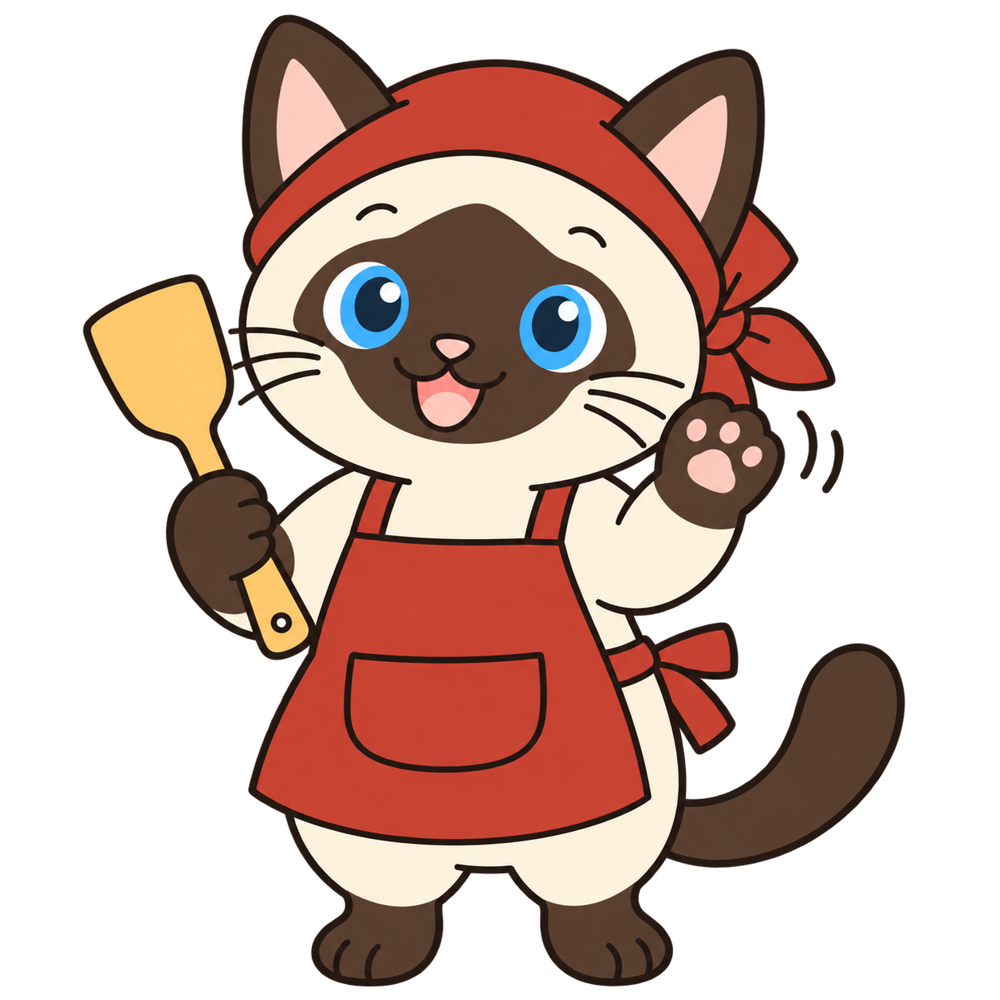
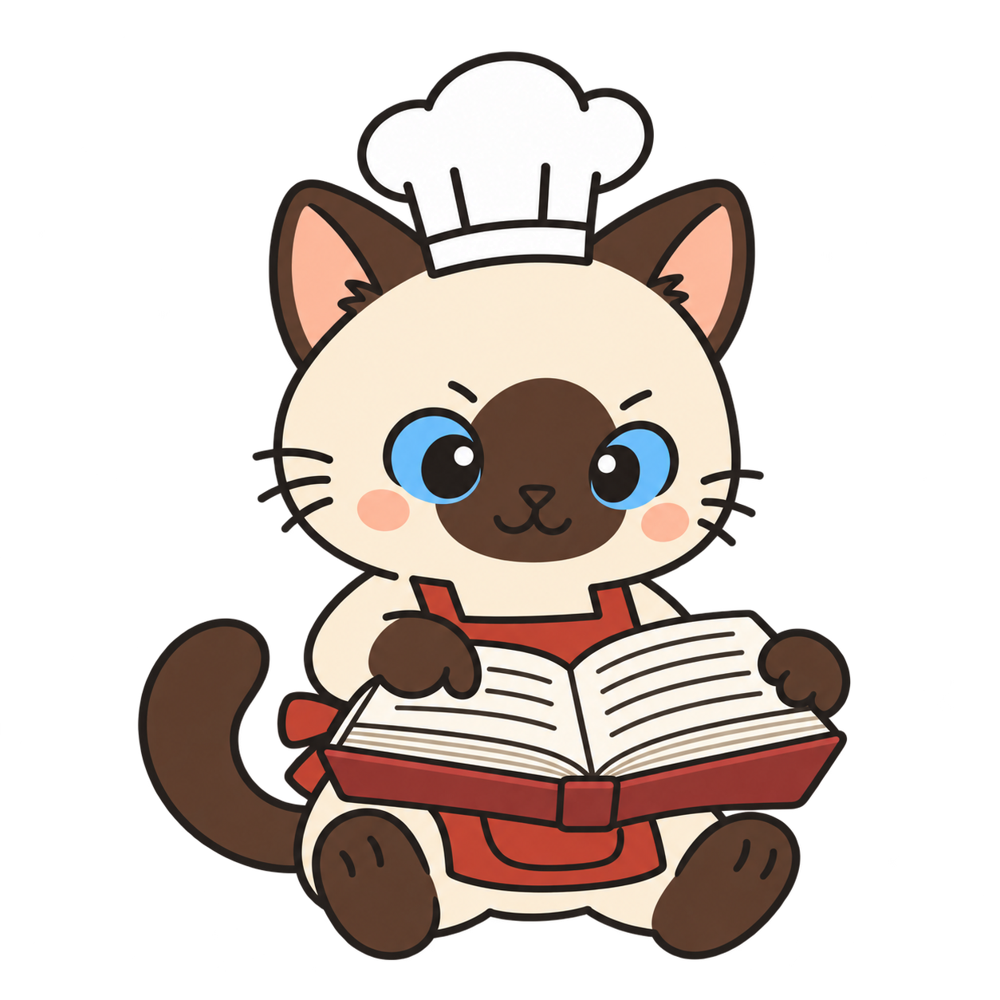
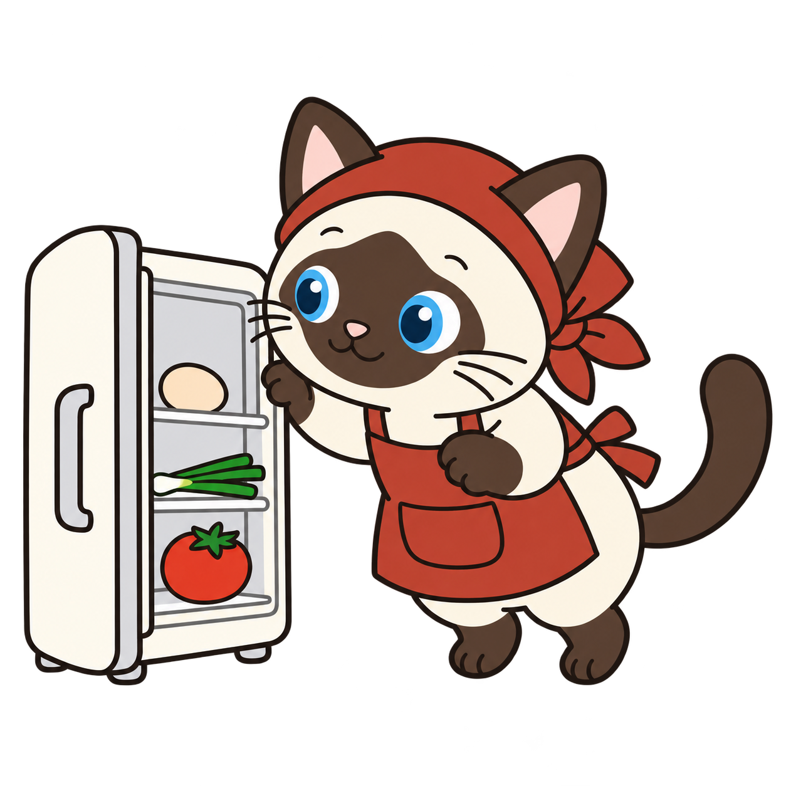
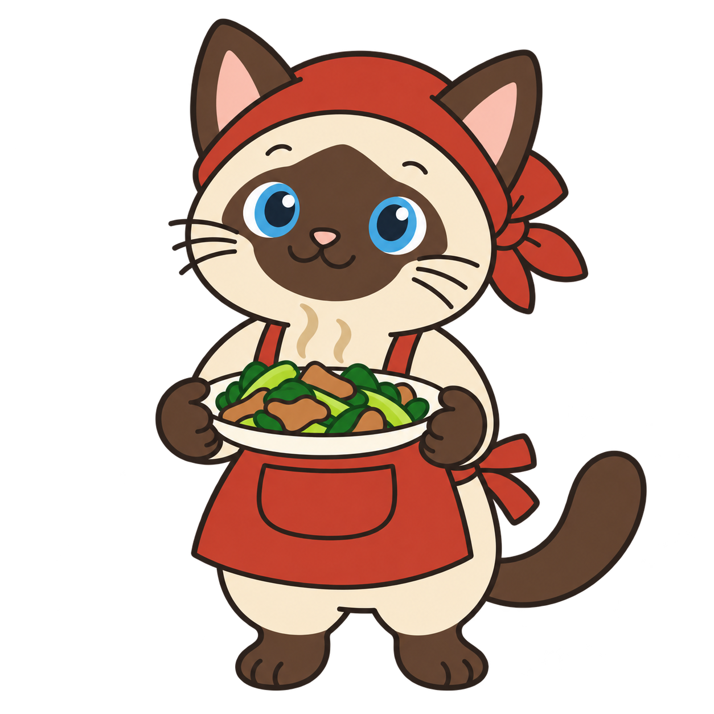
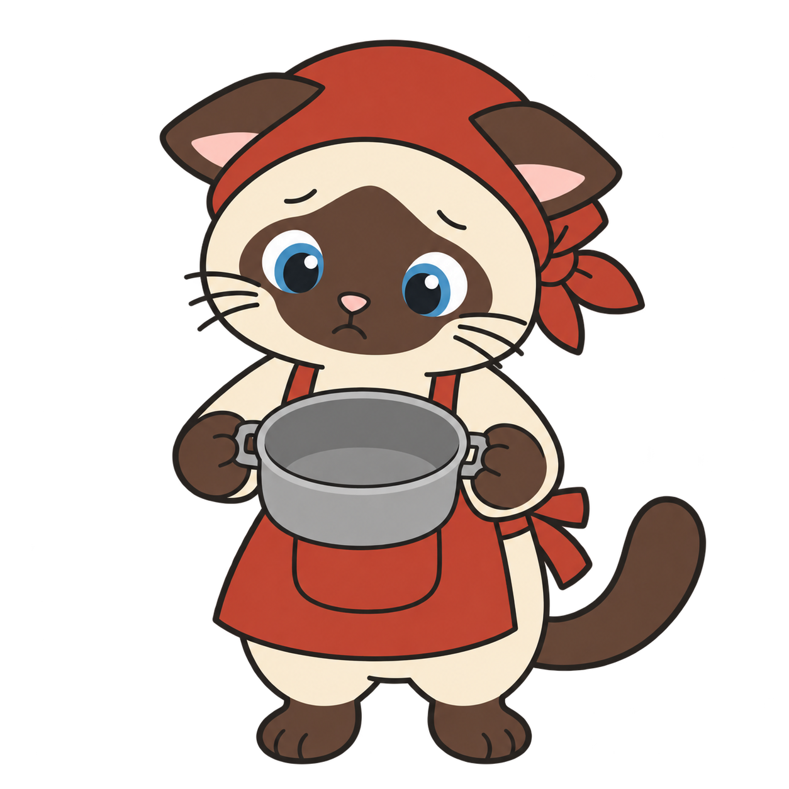
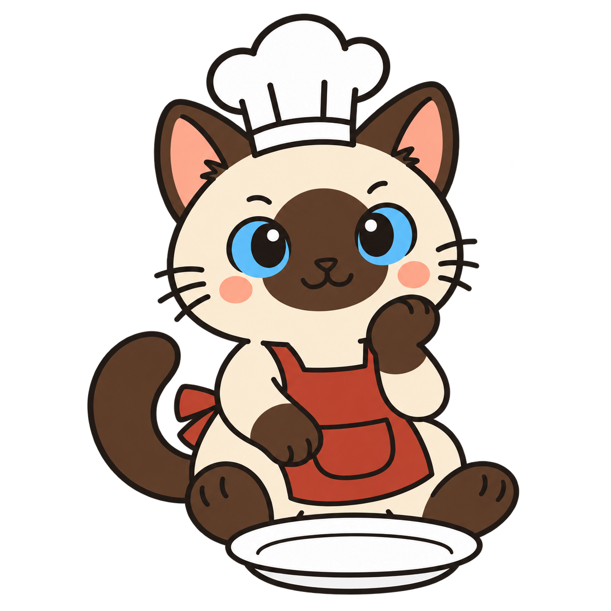
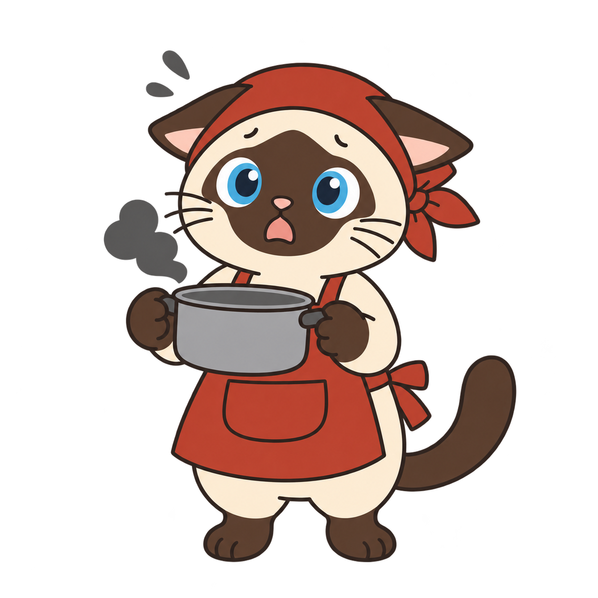

<!doctype html><meta charset="utf-8"><title>猫猫动作</title>
<style>body{margin:0;background:#f3f0e8;font:15px "PingFang SC",sans-serif;color:#24221e;padding:24px;display:grid;grid-template-columns:repeat(auto-fill,minmax(240px,1fr));gap:20px}figure{margin:0;text-align:center}img{width:100%;aspect-ratio:1;object-fit:contain}figure.wide{grid-column:span 2}figure.wide img{aspect-ratio:3/2}</style>
<figure class="wide"><figcaption>首页 hero · 两只一起做饭</figcaption></figure>
<figure><figcaption>挥手 · 探头贴纸</figcaption></figure>
<figure><figcaption>读菜谱 · 原理页</figcaption></figure>
<figure><figcaption>翻冰箱 · 冰箱页</figcaption></figure>
<figure><figcaption>端菜 · 做完所有步骤</figcaption></figure>
<figure><figcaption>拿菜单发愣 · 404</figcaption></figure>
<figure><figcaption>空锅 · 搜不到</figcaption></figure>
<figure><figcaption>空盘等待 · 收藏为空</figcaption></figure>
<figure><figcaption>锅冒黑烟 · 出错了</figcaption></figure>
